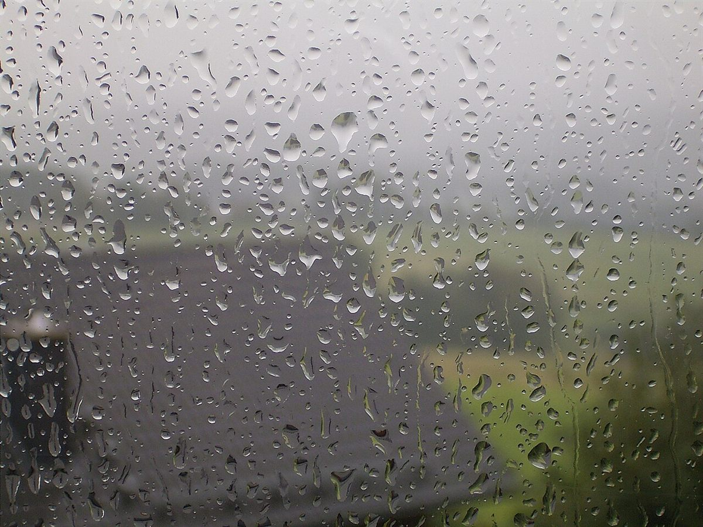
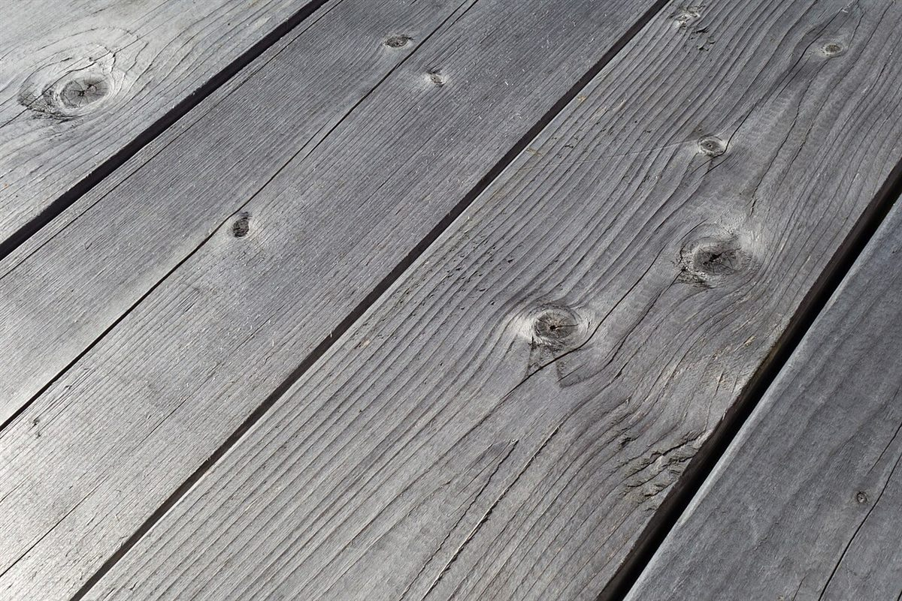

ページをめくる音が聞こえるくらい、時間がゆっくり流れているように感じました。急いでいた気持ちがほどけて、気づけばずいぶん長く腰を下ろしていました。
第3章 口コミ
口コミ

以下は制作側が作成したイメージ例であり、実際のお客様の声ではありません
ご来店の体験を想像していただくための例文です。店舗の実際の内容とは異なる場合があります
一人で過ごしても居心地が悪くならない、静かな時間でした。誰にも気を使わず、自分のペースで過ごせるのがありがたいです。
本を一冊選んで、窓の外をながめながら飲み物をゆっくり味わう時間が心地よかったです。読書の合間にぼんやりするのもいいなと思いました。
